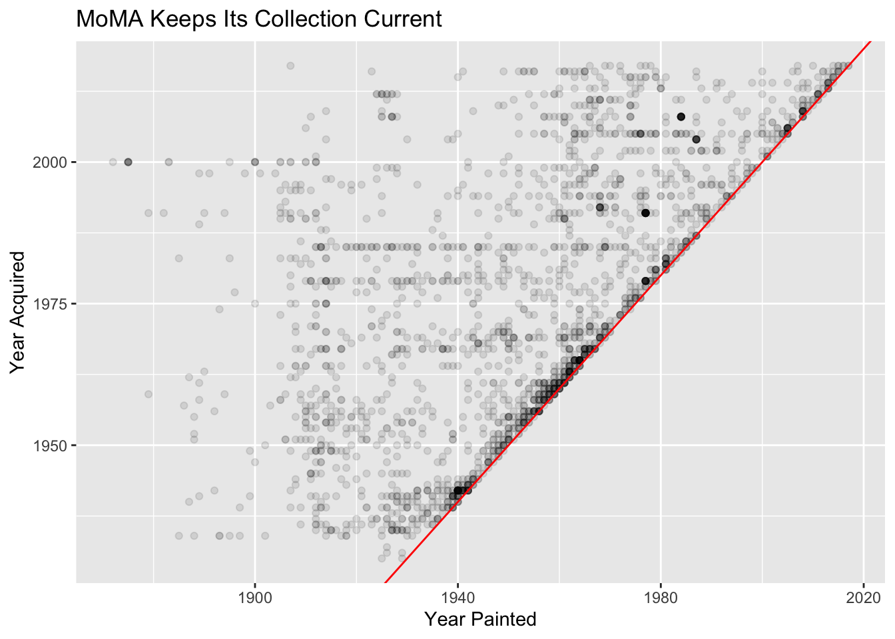
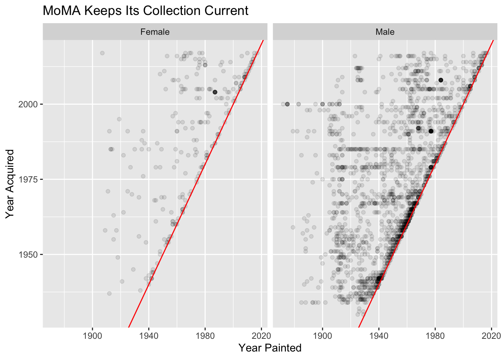
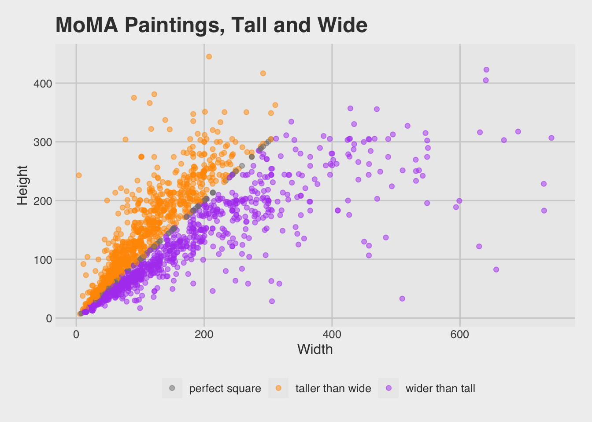
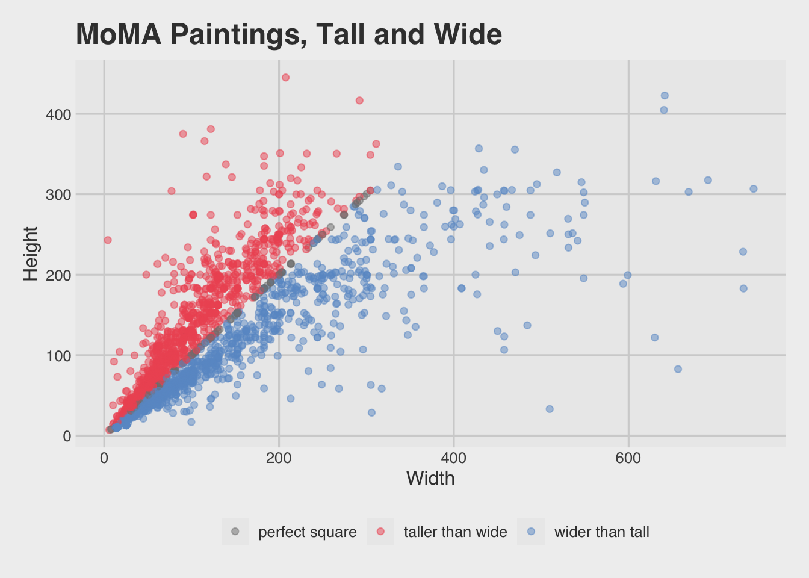

Lab 02: MoMA Museum Tour
BMI 5/625
Alison Hill, with (slight) modifications by Steven Bedrick
1 Goals for Lab 02
- Review
dplyrfunctions - Practice using
dplyrfunctions to get to know a new dataset - Map global plot aesthetics to variables in
ggplot2 - Create facetted plots with
ggplot2
2 Slides for today
knitr::include_url("slides/02-slides.html")3 Inspiration + data
We’ll use data from the Museum of Modern Art (MoMA)
- Publicly available on GitHub
- As analyzed by fivethirtyeight.com
- And by others
4 Packages needed
library(here) # to set file path if working from local file
library(tidyverse) # readr, ggplot2, dplyr
library(dplyr) # just to make sure that dplyr's summarise, count, etc. "win"5 Read in the data
Note! This is not the original data- We did a lot of cleaning and
decision-making in the pre-processing, and stored the result in
data/artworks-cleaned.csv. The below contains only
paintings and drawings in the MoMA collection.
The finished data set is available at here, and is also present locally in the Posit Cloud project:
library(here)
library(readr)
moma <- read_csv(here::here("data", "artworks-cleaned.csv"))6 Know your data
Try to answer all of these questions using dplyr.
Answers are below but try them on your own first!
- How many paintings (rows) are in
moma? How many variables (columns) are inmoma? - What is the first painting acquired by MoMA? Which year? Which artist? What title?
- What is the oldest painting in the collection? Which year? Which artist? What title?
- How many distinct artists are there?
- Which artist has the most paintings in the collection? How many paintings are by this artist?
- How many paintings by male vs female artists?
If you want more:
- How many artists of each gender are there?
- In what year were the most paintings acquired? Created?
- In what year was the first painting by a (solo) female artist acquired? When was that painting created? Which artist? What title?
6.1 How many paintings?
- How many rows/observations are in
moma? - How many variables are in
moma?
Hint: These questions can be answered using the
dplyr function glimpse.
library(dplyr)
moma
glimpse(moma)6.2 What is the first painting acquired?
- What is the first painting acquired by MoMA (since they started tracking)?
- What year was it acquired?
- Which artist?
- What title?
Hint: These questions can be answered by combining two
dplyr functions: select and
arrange.
moma %>%
select(artist, title, year_acquired) %>%
arrange(year_acquired)# A tibble: 2,253 × 3
artist title year_acquired
<chr> <chr> <dbl>
1 Edward Hopper House by the Railroad 1930
2 Bernard Karfiol Seated Nude 1930
3 Pierre Roy Daylight Savings Time 1931
4 Preston Dickinson Plums on a Plate 1931
5 Otto Dix Dr. Mayer-Hermann 1932
6 Paul Cézanne The Bather 1934
7 Paul Cézanne Pines and Rocks (Fontainebleau?) 1934
8 Paul Cézanne Still Life with Ginger Jar, Sugar Bowl, and … 1934
9 Paul Cézanne Still Life with Apples 1934
10 Arthur B. Davies Italian Landscape 1934
# ℹ 2,243 more rows6.3 What is the oldest painting in the MoMA collection?
- What is the oldest painting in the MoMA collection historically (since they started tracking)?
- What year was it created?
- Which artist?
- What title?
Hint: These questions can be answered by combining two
dplyr functions: select and
arrange.
moma %>%
select(artist, title, year_created) %>%
arrange(year_created)# A tibble: 2,253 × 3
artist title year_created
<chr> <chr> <dbl>
1 Odilon Redon Landscape at Daybreak 1872
2 Odilon Redon Apache (Man on Horseback) 1875
3 Odilon Redon Apache (Man on Horseback II) 1875
4 Odilon Redon Fishing Boat 1875
5 Odilon Redon Rocky Peak 1875
6 Odilon Redon The Rocky Slope 1875
7 Odilon Redon Landscape with Rocks, near Royan 1875
8 Paul Cézanne Still Life with Fruit Dish 1879
9 Paul Cézanne L'Estaque 1879
10 Claude Monet On the Cliff at Pourville, Clear Weather 1882
# ℹ 2,243 more rowsTo do inline comments, I could say that the oldest painting is Landscape at Daybreak, painted by Odilon Redon in 1872.
6.4 How many artists?
- How many distinct artists are there?
Hint: Try dplyr::distinct.
moma %>%
distinct(artist)You could add a tally() too to get just the number of
rows. You can also then use pull() to get that single
number out of the tibble:
num_artists <- moma %>%
distinct(artist) %>%
tally() %>%
pull()
num_artists[1] 989Then I can refer to this number in inline comments like: there are 989 total.
6.5 Which artist has the most paintings?
- Which artist has the most paintings ever owned by
moma? - How many paintings in the MoMA collection by that artist?
Hint: Try dplyr::count. Use
?count to figure out how to sort the output.
moma %>%
count(artist, sort = TRUE)# A tibble: 989 × 2
artist n
<chr> <int>
1 Pablo Picasso 55
2 Henri Matisse 32
3 On Kawara 32
4 Jacob Lawrence 30
5 Batiste Madalena 25
6 Jean Dubuffet 25
7 Odilon Redon 25
8 Ben Vautier 24
9 Frank Stella 23
10 Philip Guston 23
# ℹ 979 more rowsIn the ?count documentation, it says:
“count and tally are designed so that you can
call them repeatedly, each time rolling up a level of detail.” Try
running count() again (leave parentheses empty) on your
last code chunk, like so:
moma %>%
count(artist, sort = TRUE) %>%
count()# A tibble: 1 × 1
n
<int>
1 9896.6 How many paintings by male vs female artists?
moma %>%
count(artist_gender)# A tibble: 3 × 2
artist_gender n
<chr> <int>
1 Female 252
2 Male 1991
3 <NA> 10Now together we’ll count the number of artists by gender. You’ll need
to give count two variable names in the parentheses:
artist_gender and artist.
moma %>%
count(artist_gender, artist, sort = TRUE) # A tibble: 989 × 3
artist_gender artist n
<chr> <chr> <int>
1 Male Pablo Picasso 55
2 Male Henri Matisse 32
3 Male On Kawara 32
4 Male Jacob Lawrence 30
5 Male Batiste Madalena 25
6 Male Jean Dubuffet 25
7 Male Odilon Redon 25
8 Male Ben Vautier 24
9 Male Frank Stella 23
10 Male Philip Guston 23
# ℹ 979 more rowsThis output is not super-helpful as we already know that Pablo
Picasso has 55 paintings in the MoMA collection. But how can we find out
which female artist has the most paintings? We have a few options. Let’s
first add a filter for females.
moma %>%
count(artist_gender, artist, sort = TRUE) %>%
filter(artist_gender == "Female")# A tibble: 143 × 3
artist_gender artist n
<chr> <chr> <int>
1 Female Sherrie Levine 12
2 Female Agnes Martin 9
3 Female Elizabeth Murray 8
4 Female Susan Rothenberg 8
5 Female Joan Mitchell 6
6 Female Loren MacIver 6
7 Female R. H. Quaytman 6
8 Female Helen Frankenthaler 5
9 Female Georgia O'Keeffe 4
10 Female Lynette Yiadom-Boakye 4
# ℹ 133 more rowsAnother option is to use another dplyr function called
top_n(). Use ?top_n to see how it works. How
it won’t work in this context:
moma %>%
count(artist_gender, artist, sort = TRUE) %>%
top_n(2)# A tibble: 3 × 3
artist_gender artist n
<chr> <chr> <int>
1 Male Pablo Picasso 55
2 Male Henri Matisse 32
3 Male On Kawara 32How it will work better is following a
group_by(artist_gender):
moma %>%
count(artist_gender, artist, sort = TRUE) %>%
group_by(artist_gender) %>%
top_n(1)# A tibble: 3 × 3
# Groups: artist_gender [3]
artist_gender artist n
<chr> <chr> <int>
1 Male Pablo Picasso 55
2 Female Sherrie Levine 12
3 <NA> Gilbert & George, Gilbert Proesch, George Passmore 2Now we can see that Sherrie Levine has 12 paintings. This is a pretty far cry from the 55 paintings by Pablo Picasso.
6.7 How many artists of each gender are there?
This is a harder question to answer than you think! This is because
the level of observation in our current moma dataset is
unique paintings. We have multiple paintings done by the same
artists though, so counting just the number of unique paintings is
different than counting the number of unique artists.
Remember how count can be used back-to-back to roll up a
level of detail? Try running count(artist_gender) again on
your last code chunk.
moma %>%
count(artist_gender, artist) %>%
count(artist_gender)# A tibble: 3 × 2
artist_gender n
<chr> <int>
1 Female 143
2 Male 837
3 <NA> 9This output takes the previous table (made with
count(artist_gender, artist)), and essentially ignores the
n column. So we no longer care about how many
paintings each individual artist created. Instead, we want to
count the rows in this new table where each row is
a unique artist. By counting by artist_gender in the last
line, we are grouping by levels of that variable (so
Female/Male/NA) and nn is the number of unique
artists for each gender category recorded.
6.8 When were the most paintings in the collection acquired?
Hint: Try dplyr::count. Use
?count to figure out how to sort the output.
moma %>%
count(year_acquired, sort = TRUE)# A tibble: 88 × 2
year_acquired n
<dbl> <int>
1 1985 86
2 1942 71
3 1979 71
4 1991 67
5 2005 67
6 1967 65
7 2008 55
8 1961 45
9 1969 45
10 1956 42
# ℹ 78 more rows6.9 When were the most paintings in the collection created?
Hint: Try dplyr::count. Use
?count to figure out how to sort the output.
moma %>%
count(year_created, sort = TRUE)# A tibble: 139 × 2
year_created n
<dbl> <int>
1 1977 57
2 1940 56
3 1964 56
4 1961 50
5 1962 49
6 1963 44
7 1959 42
8 1968 40
9 1960 39
10 1914 37
# ℹ 129 more rows6.10 What about the first painting by a solo female artist?
Hint: Try combining three dplyr functions:
filter, select, and arrange.
When was the first painting by a solo female artist acquired?
moma %>%
filter(num_artists == 1 & n_female_artists == 1) %>%
select(title, artist, year_acquired, year_created) %>%
arrange(year_acquired)# A tibble: 252 × 4
title artist year_acquired year_created
<chr> <chr> <dbl> <dbl>
1 Landscape, 47 Natalia Goncharova 1937 1912
2 Shack Loren MacIver 1938 1934
3 Hopscotch Loren MacIver 1940 1940
4 Shadows with Painting Irene Rice Pereira 1941 1940
5 Figure Varvara Stepanova 1941 1921
6 Still Life in Red Amelia Peláez Del… 1942 1938
7 White Lines Irene Rice Pereira 1942 1942
8 Musical Squash Maud Morgan 1942 1942
9 Desolation Raquel Forner 1942 1942
10 Self-Portrait with Cropped Hair Frida Kahlo 1943 1940
# ℹ 242 more rowsWhat is the oldest painting by a solo female artist, and when was it created?
moma %>%
filter(num_artists == 1 & n_female_artists == 1) %>%
select(title, artist, year_acquired, year_created) %>%
arrange(year_created)# A tibble: 252 × 4
title artist year_acquired year_created
<chr> <chr> <dbl> <dbl>
1 Self-Portrait with Two Flowers in Her Rais… Paula… 2017 1907
2 Girl with Bare Shoulders Gwen … 1958 1909
3 Girl Reading at a Window Gwen … 1971 1911
4 Landscape, 47 Natal… 1937 1912
5 Cubist Nude Alexa… 1991 1912
6 Rayonism, Blue-Green Forest Natal… 1985 1913
7 The Factory and the Bridge Olga … 1985 1913
8 Subject from a Dyer's Shop Lyubo… 1985 1914
9 Portuguese Market Sonia… 1955 1915
10 Girl with a Blue Scarf Gwen … 1963 1915
# ℹ 242 more rows# or, because artist_gender is missing when num_artists > 1
moma %>%
filter(artist_gender == "Female") %>%
select(title, artist, year_acquired, year_created) %>%
arrange(year_acquired)7 Basics of
ggplot2
8 Plot your data
8.1 Plot year painted vs year acquired
Let’s recreate this plot from fivethirtyeight (mostly)!

Things to consider:
- You’ll want to play around with setting an
alphavalue here- keep in mind that0is totally transparent and1is opaque. - Try using
geom_abline()to add the line in red (use the default intercept value of 0). The actual red line is difficult to recreate- here is what the authors say: “The red regression line shows the “modernizing” of MoMA’s collection — how quickly the museum has moved toward acquiring recent paintings.” - Go back to Lab
01 to review how to do the following:
- Change the x- and y-axis labels and the plot title to match the plot above
ggplot(moma, aes(year_created, year_acquired)) +
geom_point(alpha = .1, na.rm = TRUE) +
geom_abline(intercept = c(0,0), colour = "red") +
labs(x = "Year Painted", y = "Year Acquired") +
ggtitle("MoMA Keeps Its Collection Current") 
8.2 Facet by artist gender
Can you make the same plot above, but facet by artist gender?
Hint: For this to make sense, you probably want to do some filtering to select only those paintings where there was one “solo” artist.
moma_solo <- moma %>%
filter(num_artists == 1)
ggplot(moma_solo, aes(year_created, year_acquired)) +
geom_point(alpha = .1) +
geom_abline(intercept = c(0,0), colour = "red") +
labs(x = "Year Painted", y = "Year Acquired") +
ggtitle("MoMA Keeps Its Collection Current") +
facet_wrap(~artist_gender)
9 Plot painting dimensions
Let’s (somewhat) try to recreate this scatterplot from fivethirtyeight.

To recreate, some things to consider:
- Try filtering all paintings with height less than 600 cm and width less than 760 cm.
- If you want to add color as in the original, you’ll need to create a
new variable using
mutate.
Hint: You’ll probably also want to look into
case_when to create a categorical variable to color by.
moma_dim <- moma %>%
filter(height_cm < 600, width_cm < 760) %>%
mutate(hw_ratio = height_cm / width_cm,
hw_cat = case_when(
hw_ratio > 1 ~ "taller than wide",
hw_ratio < 1 ~ "wider than tall",
hw_ratio == 1 ~ "perfect square"
))
library(ggthemes)
ggplot(moma_dim, aes(x = width_cm, y = height_cm, colour = hw_cat)) +
geom_point(alpha = .5) +
ggtitle("MoMA Paintings, Tall and Wide") +
scale_colour_manual(name = "",
values = c("gray50", "#FF9900", "#B14CF0")) +
theme_fivethirtyeight() +
theme(axis.title = element_text()) +
labs(x = "Width", y = "Height") 
Those colors are intense! Would different ones work better?
library(ggthemes)
ggplot(moma_dim, aes(x = width_cm, y = height_cm, colour = hw_cat)) +
geom_point(alpha = .5) +
ggtitle("MoMA Paintings, Tall and Wide") +
scale_colour_manual(name = "",
values = c("gray50", "#ee5863", "#6999cd")) +
theme_fivethirtyeight() +
theme(axis.title = element_text()) +
labs(x = "Width", y = "Height") 
We could also do away with the legend and use
geom_annotate instead.
library(ggthemes)
ggplot(moma_dim, aes(x = width_cm, y = height_cm, colour = hw_cat)) +
geom_point(alpha = .5, show.legend = FALSE) +
ggtitle("MoMA Paintings, Tall and Wide") +
scale_colour_manual(name = "",
values = c("gray50", "#ee5863", "#6999cd")) +
theme_fivethirtyeight() +
theme(axis.title = element_text()) +
labs(x = "Width", y = "Height") +
annotate(x = 200, y = 380, geom = "text",
label = "Taller than\nWide", color = "#ee5863",
size = 5, family = "Lato", hjust = 1, fontface = 2) +
annotate(x = 375, y = 100, geom = "text",
label = "Wider than\nTall", color = "#6999cd",
size = 5, family = "Lato", hjust = 0, fontface = 2)
10 Plot something new & different!
It can be anything- you can change colors, add annotations, switch the geoms, add new variables to examine- the world is your oyster! The only requirements are:
- You make one new plot that is original, and
- You write 1-2 sentences to present the plot and why it makes sense. What questions do you think your plot can help you to answer?